Month two of the World Race we would fly into Hong Kong and make the 48+ hour trek to our next home for the next 30 days.
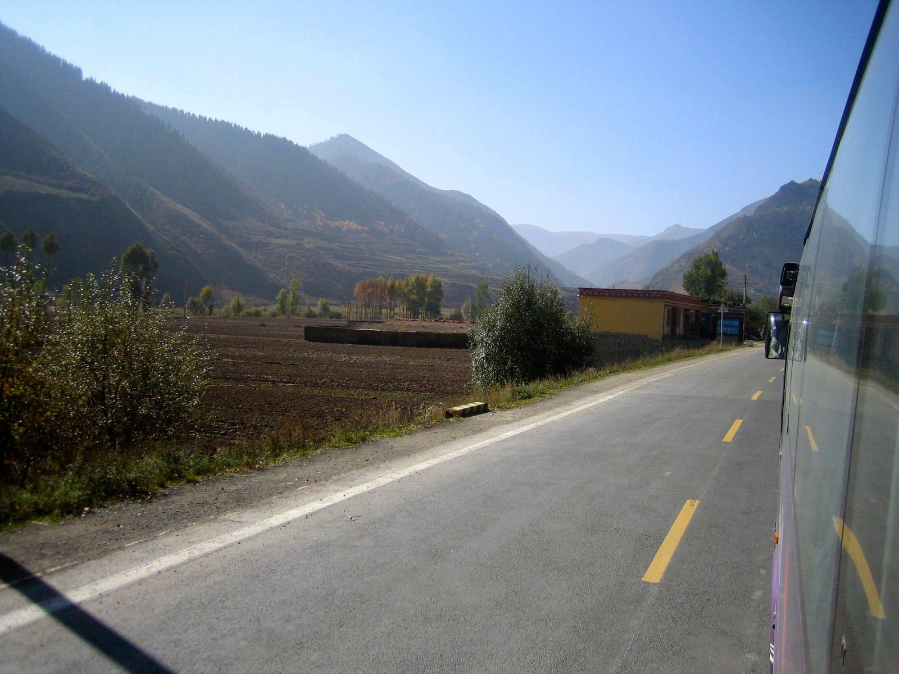
Prior to leaving for China we were briefed on the dangers of being a Christian in a communist country.
For the first time in my 22-years, I heard stories of the underground Christian church.
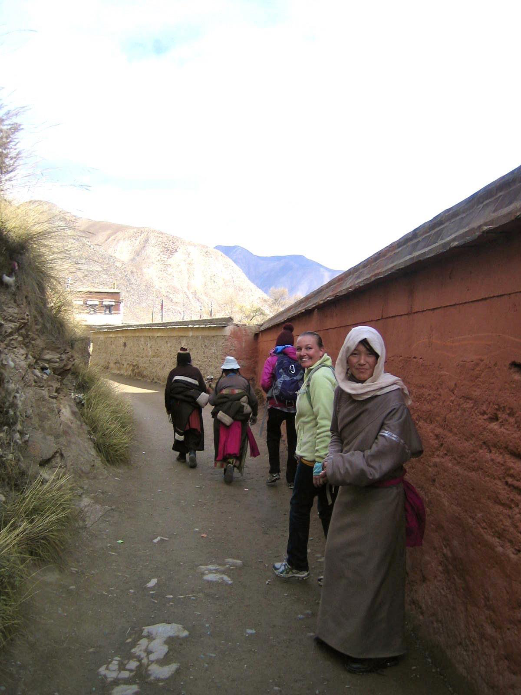
Chinese citizens abandoning their families in the name of Jesus, jumping from buildings to escape the police, avoiding bullets that missed them by centimeters.
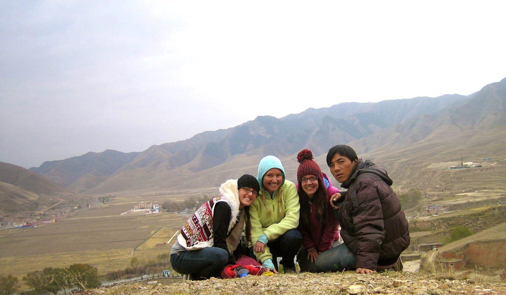
Each team spent hours brainstorming safe words for forbidden terms such as 'Missionary', 'Bible', and 'Christian'.
It was a world that was completely foreign to me but also held great intrigue. What adventure, and all in the name of this peaceful Savior named Jesus.
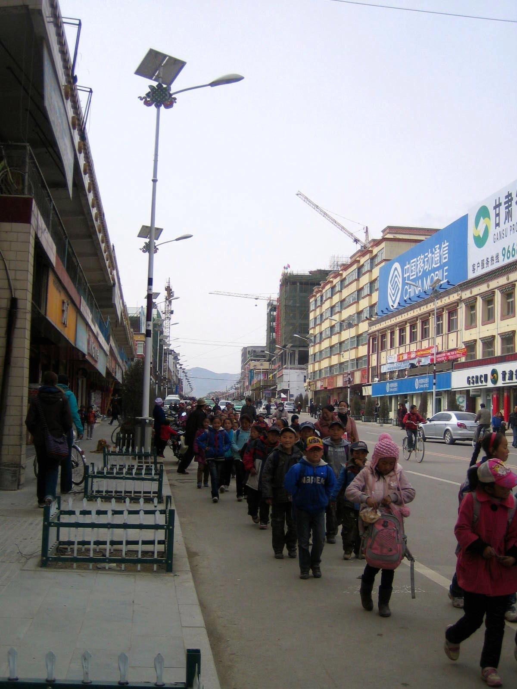
Putting our safety second, the thing we spent the majority of our time going over was how to protect those who were asking us to serve alongside them.
How do we ensure we didn't bring more harm than good?
The orphanages, Tibetan Cafes and underground churches were all specifically requesting the presence of us Westernized missionaries but we also came to realize our presence alone could be life-threatening.
Going 'Dark' was essential.
Taking down my Facebook, deactivating my email, and saying goodbye to my parents and loved ones for an entire month was both terrifying and invigorating.
An exercise I wish all 2021 United States citizens could experience.
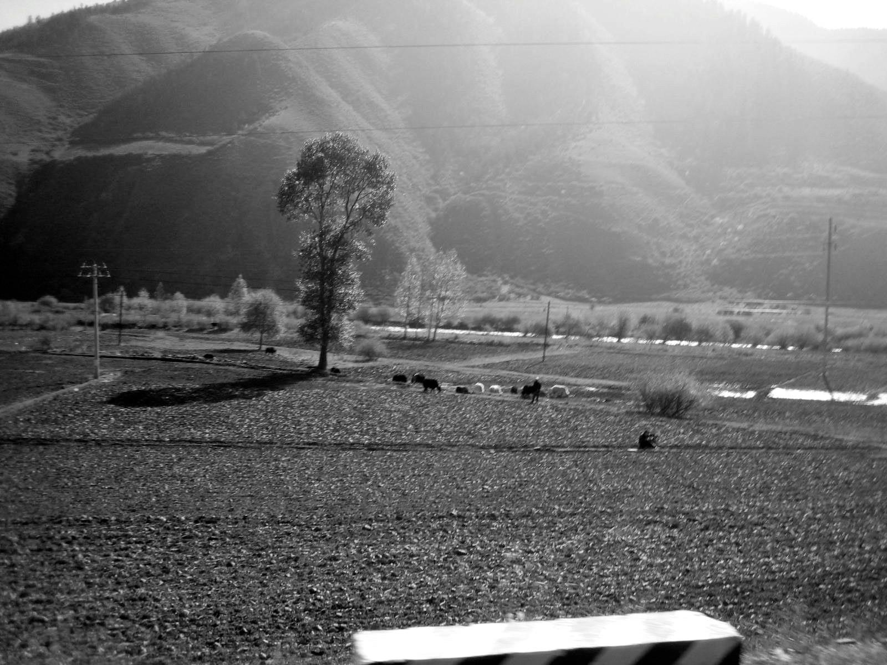
Flying into Hong Kong instead of mainland China due to numerous reasons including price and necessity, we enjoyed a luxurious but inexpensive direct flight into Hong Kong International Airport.
Sitting next to my friend Maria on the 3-hour sunset flight, we enjoyed a few glasses of wine, giggled and ate a delicious meal. Not knowing what lay ahead, the warmth of the wine made me feel even more giddy walking through that busy customs line from Philippines into Hong Kong.
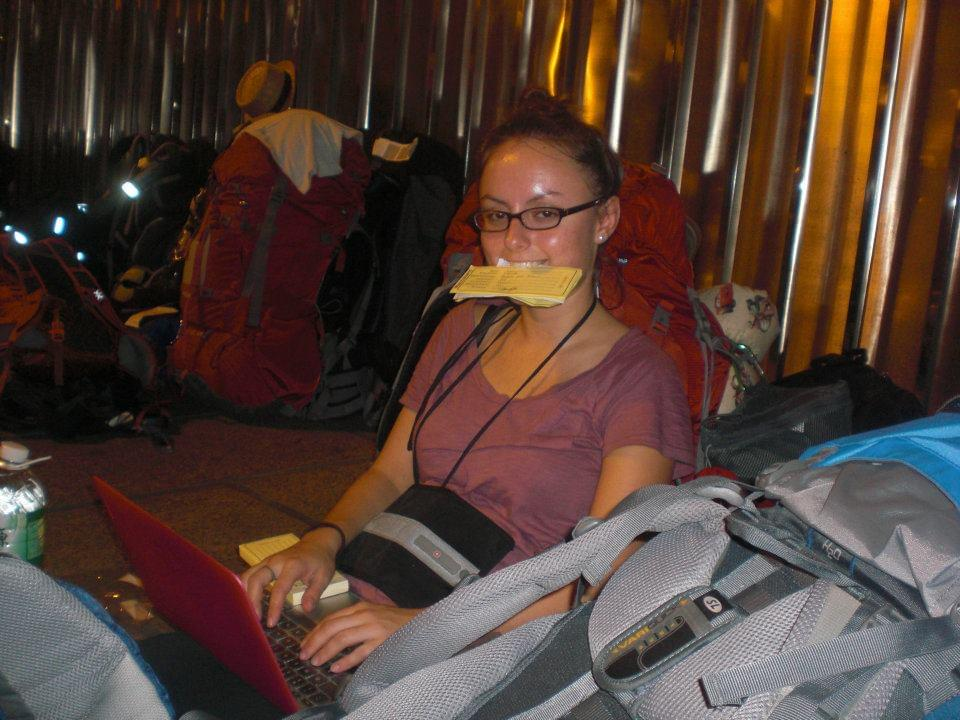
I remember thinking the view from the airport was heavenly. Large rocks jutting out of the ocean water, more beautiful than the cliffs I would jump off as a thrill seeking high school skier.
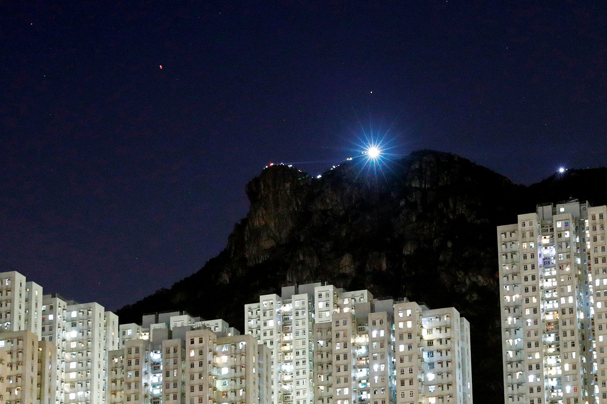
We would wait in that extravagant airport for hours waiting for our bus to take us across the border into mainland China.
The dichotomy between the dump of the Philippines and this Starbucks filled airport felt intense. Once again pressing into that pressure on my chest. The feeling of straddling two worlds.
The large tour bus picked up our group of 50 young missionaries, driving past Disney Land Hong Kong, the 'tour guide' announcing over the bus loud speaker;
The fanciest place on earth.
Our American passports in hand, myself shaking and triple checking that my Chinese Visa was still attached, I prepared to enter into mainland China.
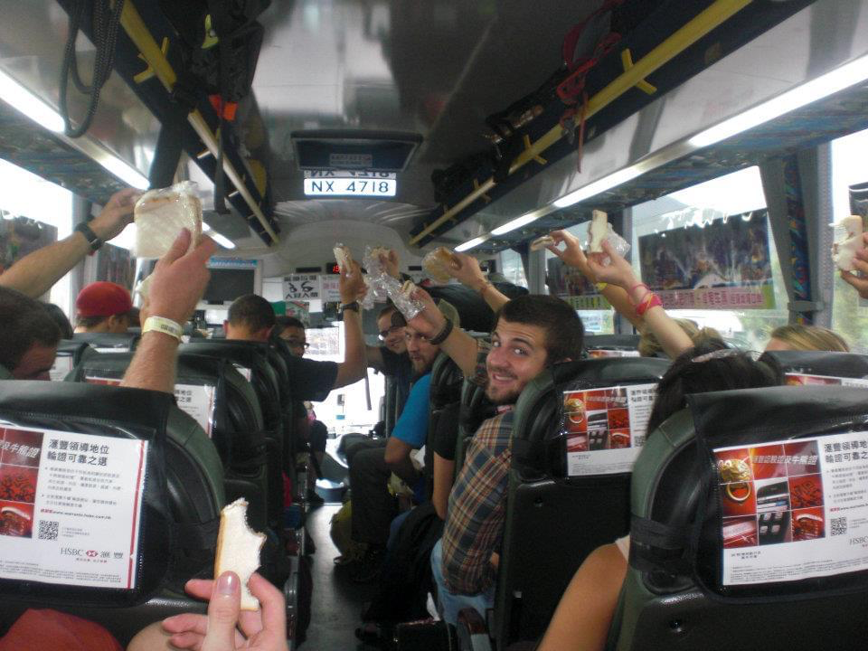
We quickly piled off the luxury bus and into the bustling line, people packed like sardines to enter a country most of us had never been.
Eyes wide open, it was my first experience gaining the understanding that what I held in my hand, a United States passport was powerful.
With no sense of personal space, the locals pushed us along.
After we had walked across that border, our bus picked us back up, our journey continuing.
From here our group would split, several teams breaking off towards Tibet, others headed elsewhere.
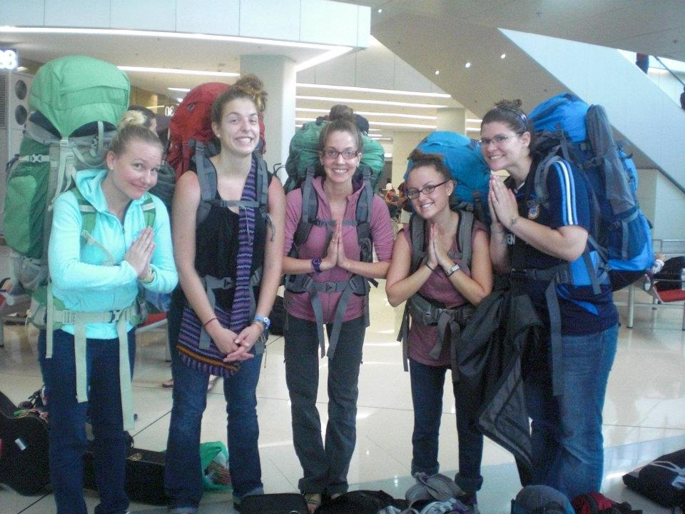
Our team of 6 women were assigned a tiny village bordering Tibet. We were to assist a man known to be part of the underground church with his tiny café.
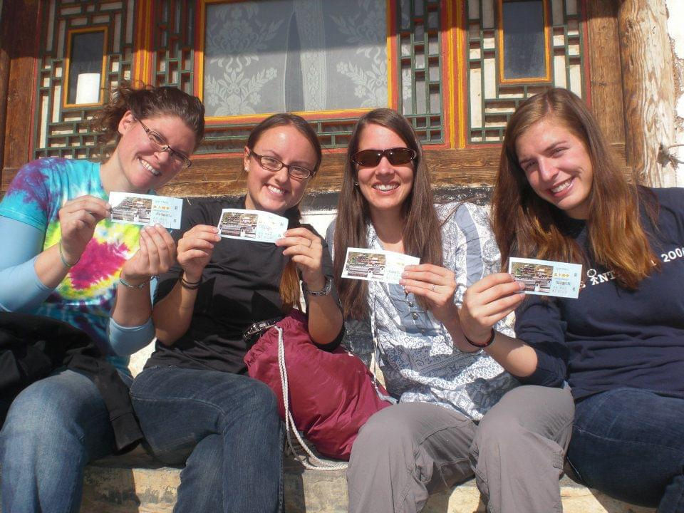
Dropped from the safety of that bus in what was referred to as the 'local' Chinese train station, we would navigate the Mandarin signs without a translator.
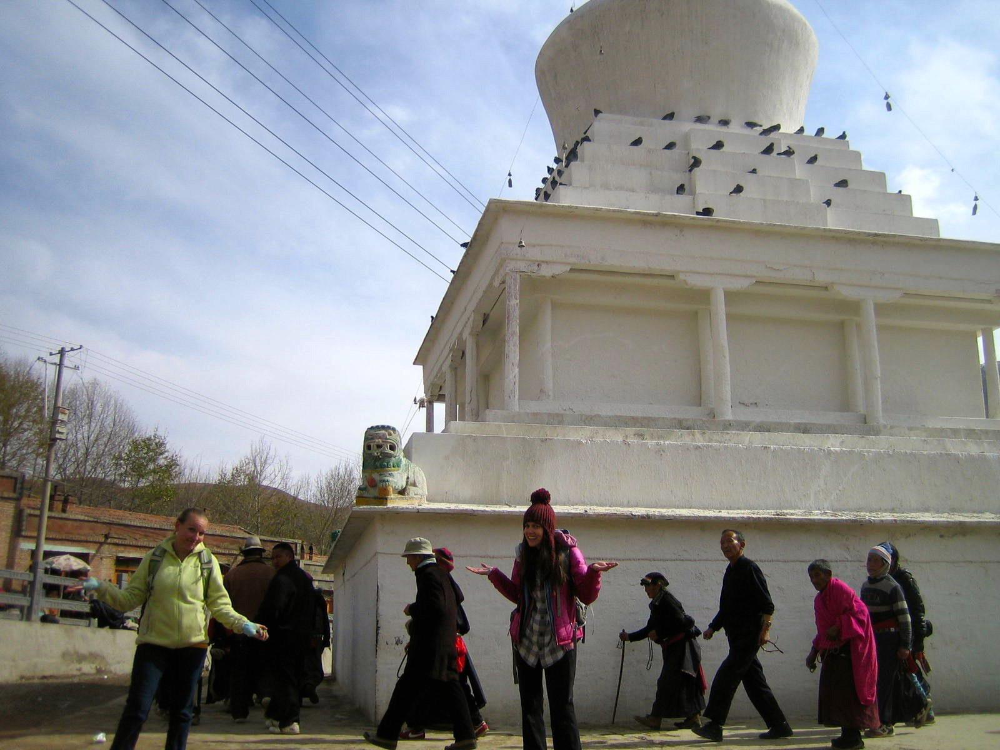
This would be my first encounter with a true squatty potty. Nothing fancy here!
Let me tell you it left A LOT to be desired...
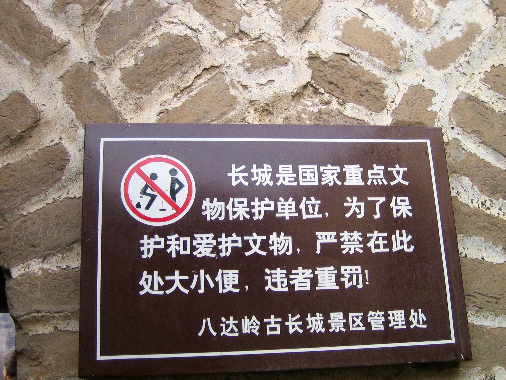
Prior to leaving for China we were asked if we wanted the 'True' Chinese train experience (whatever that meant) vs. the luxury accommodations.
For an extra $20USD we could travel across the entire 3,070km (1900miles) of mainland China to Tibet in what I came to find out was three deep bunk beds.
I splurged.
Our team of women decided to split the cost, a few of us choosing the less than ideal accommodations and others buying the 'beds'.
Pushed and shoved, we arrived at what we were told was our assigned bunks. Being the smallest I offered the top bunk. I was exhausted, snuggling into my sleeping bag I passed out.
A few hours later I woke up, out of sorts and grabbing my glasses I looked over to the person only 2 feet from me, a Chinese man handcuffed to the bed.
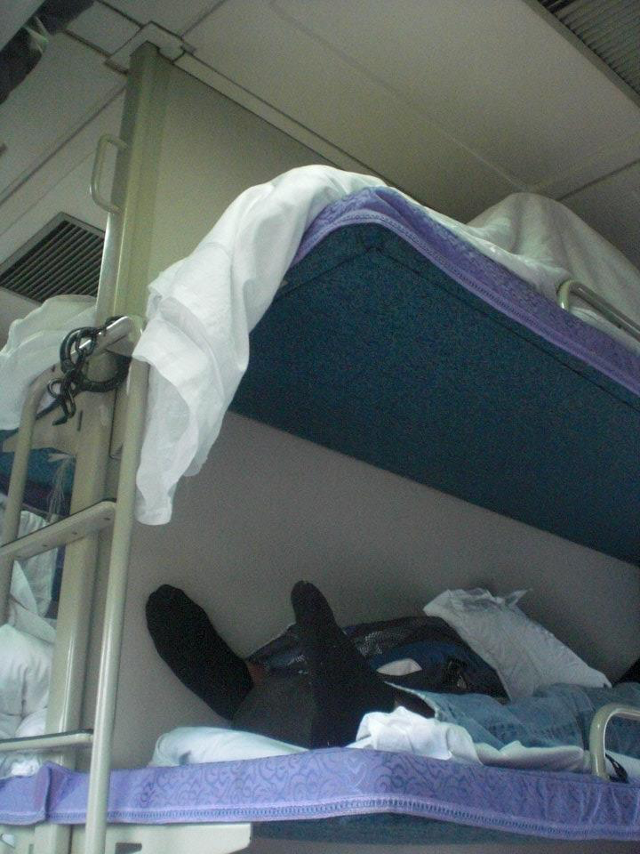
Still being in a daze, I flipped to my other side and fell asleep facing the wall.
Nín hǎo miàn!
Startled I woke up. Looking down from my high bunk, I saw a tiny woman barreling down the hallway in traditional wardrobe offering what looked like noodles for pennies.
Noticing my teammate had also arisen, we purchased some sustenance.
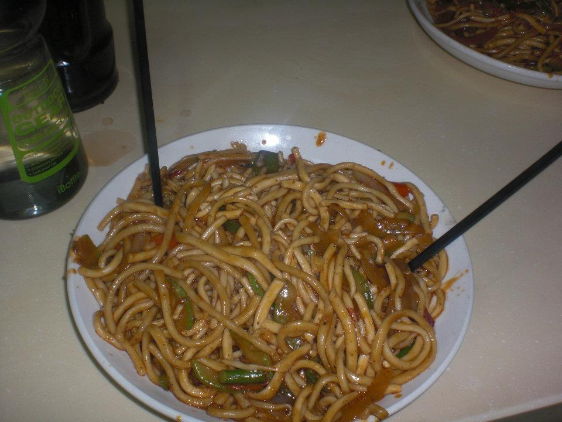
Knowing one of the other ladies struggled with Rheumatoid arthritis and was in the 'traditional' Chinese seating we ventured out of second class and to the back of the train to offer her our bed.
The noise hit us like a freight train.
LOUD NOISES!
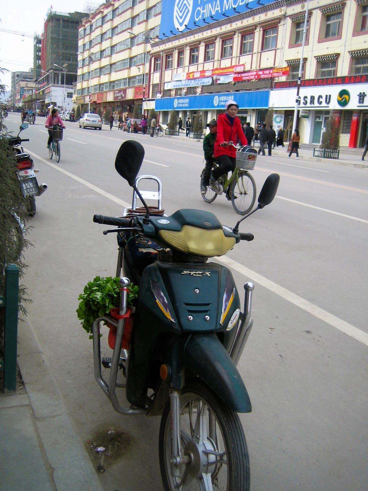
Laughing, coughing, hacking, wailing babies and smells that were literally OUT OF THIS WORLD hit our noses.
Our team was playing cards around wooden tables. Having secured a prime spot next to the squatty-potty bathroom, my co-patriots were in good spirits.
Seeing our faces, Charlene was both humbled and JOYOUS at the offer of a bed and quickly got out of her wooden bench seat.
I joked that she should probably take my other teammates bed because it appeared mine neighbored an Asian inmate, she anxiously laughed and with a horrified expression ventured to the front of the train.
It was on this train I learned the dexterity required when using a public non-gender specific squatty potty on a moving train. I will allow your imagine to run wild with that one.
30+ hours later we arrived confused, exhausted and in dire need of a chiropractor.

With no access to what we now know is the beauty of knowledge at our fingertips, we could only guess where we landed. Years later I would discover we were in Lanzhou, the capital of Gansu Province in Northwest China.
Lanzhou is the largest city in the province, home to 3.8milion people, roughly the size of Los Angelas and somewhere I had never heard of before.
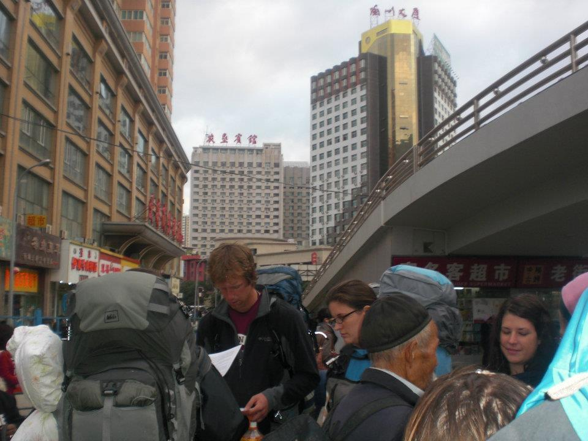
We were told only select hotels would accommodate foreigners and only a handful would accept those with an American Passport.
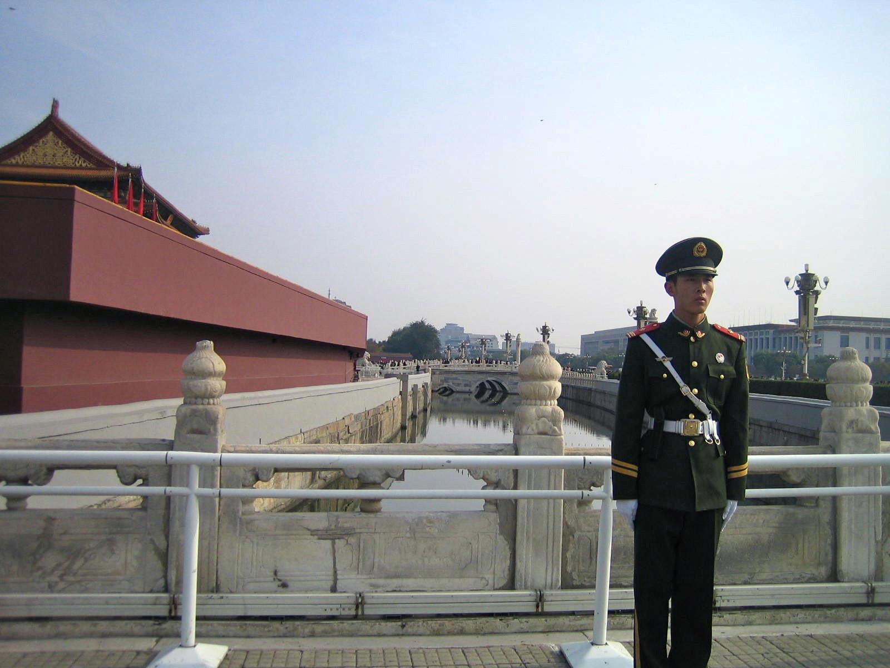
Once arriving to our gold plaqured hotel that consisted of hard wood beds with no mattresses but a working toilet and all for $10/night felt like a true luxury.
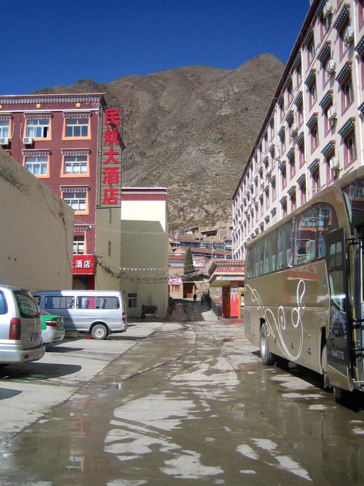
We discovered the government did bug the hotel rooms as only select rooms were even available in an otherwise empty high rise hotel building.
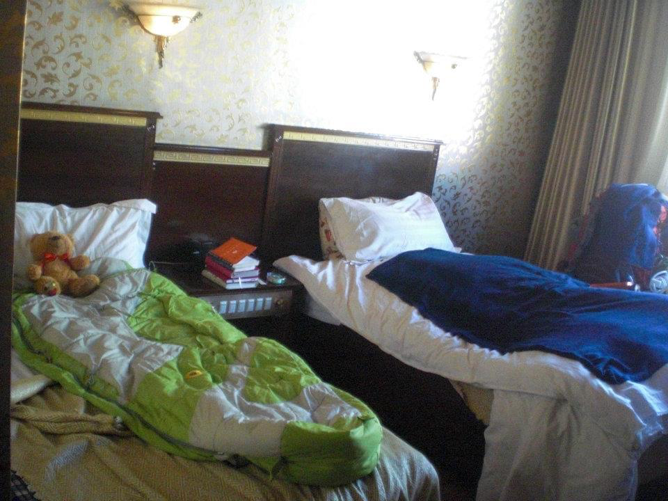
To be continued....